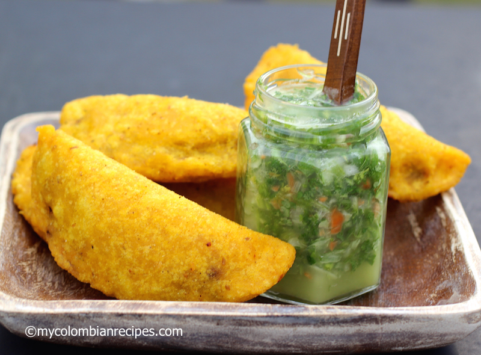

The Best Colombian Empanadas!
Colombian empanadas recipe, ideal for starters or snacks in your family or friends meetings. A traditional dish that will make everyone happy for sure!

Filling (Ground Beef) Ingredients
- 2 cups peeled and diced potatoes
- 1 chicken or vegetable bouillon tablet
- 1 tablespoon olive oil
- 1/4 cup chopped white onions
- 1 cup chopped tomato
- 1/4 cup chopped green onions
- 1 chopped garlic clove
- 2 tablespoon chopped red bell pepper
- 1/2 pound ground beef
- 1/2 teaspoon sazón with azafran
- 1/4 teaspoon black pepper
- 1/2 teaspoon salt
- 2 tablespoon chopped fresh cilantro
Corn Dough Ingredients
- 1 1/2 cups precooked yellow cornmeal masarepa
- 2 cups water
- 1 tablespoon vegetable oil
- 1/2 tablespoon sazon Goya with azafran
- 1/2 teaspoon salt
Corn Dough Instructions
Place the masarepa in a large bowl. Add the sazon Goya and salt and stir to mix well. Add the water and oil and mix to form dough. Pat the dough into a ball and knead for 2 minutes or until smooth. Cover with plastic and set aside for 20 minutes. Meanwhile make the filling.
Empanadas Instructions
- Cook the potatoes in a pot with water and the bouillon tablet for 20-25 minutes or until tender. Drain and gently mash the potatoes. Set aside.
- Heat 1 tablespoon olive oil in a large, heavy skillet. Add the onion and cook over medium-low heat stirring frequently, for 5 minutes. Add the tomatoes, green onions, garlic, bell pepper, cilantro, salt and black pepper. Cook for about 15 minutes.
- Add the ground pork and beef. Cook, breaking up the meat with a wooden spoon, for 10 to 15 minutes or until the mixture is fairly dry.
- Transfer the meat mixture to the mashed potatoes bowl and mix well to combine.
- Break small portions of the dough, about 1 ½ tablespoons each one, and form each portion into a ball by rolling between the palms of your hands.
- Place the balls of dough between two pieces of plastic and roll each out very thinly to form a circle. Remove the top plastic and place 1 tablespoon of the filling in the center of each.
- Then using the plastic underneath, fold the dough over to enclose the filling, forming a half circle. Tightly seal the edges by crimping with the tines of a fork.
- Fill a large pot with vegetable oil and heat over medium heat to 360° F.
- Carefully place 3 or 4 empanadas at the time in the heated oil and fry for about 2 minutes until golden on all sides.
Nutrition
A 71 g beef Colombian empanada has 160 calories, 6 g of fat, 25 g of carbohydrates, 3 g of protein and 450 mg of sodium.